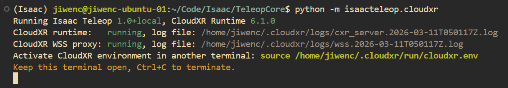

CloudXR Service#
A host runs one CloudXR runtime, and the CloudXR service owns it, together with the WSS proxy the headset connects through. Applications attach to whichever runtime is serving rather than starting their own, so the runtime — and the headset connection — outlives the application using it.
The teleop examples start a service themselves if none is running (see 3. Configure CloudXR (optional) in the quick start), and print a notice when they do, because that service keeps running after the example exits. Start it yourself when you want to:
keep the headset connected while you restart a teleop application repeatedly during development,
point OpenXR applications that do not embed
CloudXRLauncherat CloudXR,use launch modes that only the service exposes, such as serving the web client locally (
--host-client) or the out-of-band automation flags (--setup-oob,--usb-local).
Start the service#
With the isaacteleop package installed (including the cloudxr extra,
see 2. Install the isaacteleop pip package), start the service. The first run
downloads the CloudXR Web Client SDK:
python -m isaacteleop.cloudxr.service start --accept-eula
start detaches the service from your terminal: it keeps running when the
shell that started it exits, so you can close the window, and every command in
the next section finds it again.
A detached service has no terminal to prompt on, so start never asks about
the EULA — it requires --accept-eula until acceptance has been recorded,
and tells you so. Acceptance is remembered in
~/.cloudxr/run/eula_accepted, so the flag is only needed once per install
directory. Review the licence before accepting; the error message links it.
Use run in place of start to keep the service in the foreground, where
its output goes to the terminal and Ctrl+C stops it — that is what a
container entrypoint wants. run does prompt when it has a terminal.
You should see output similar to:

Figure: CloudXR service startup output#
Note
python -m isaacteleop.cloudxr still works and is equivalent to
python -m isaacteleop.cloudxr.service run. It warns on startup and is
removed in Isaac Teleop 1.7.
Take note of the source ~/.cloudxr/run/cloudxr.env path in the output. You
will need it in Load CloudXR environment variables.
Manage the service#
Every command below is a subcommand of
python -m isaacteleop.cloudxr.service.
Command |
What it does |
|---|---|
|
Start a detached service. Refuses if a runtime is already serving, rather than dropping the live session. |
|
Run in the foreground until |
|
Stop the detached service and tear the runtime down with it. Exits cleanly when there is nothing to stop. |
|
Report the running session — device profile, log files, client URL, and whether it is detached or in the foreground. Exits non-zero when no runtime is serving, so scripts can gate on it. |
|
Show the detached service’s log ( |
status reports the session that is actually running, recovered from the
service’s own command line — not the defaults of the command you just typed.
Optional launch modes#
run and start accept the same optional flags, which can be combined to
control how the headset connects and how the web client is delivered.
Command |
What it does |
|---|---|
|
Plain: headset navigates to GitHub Pages URL over WiFi. |
|
Serves the web client at |
|
OOB hub + CDP automation: opens the browser on the headset and auto-clicks CONNECT over USB adb. Client URL is GitHub Pages. |
|
OOB hub + CDP with client at |
|
All traffic over USB: adb-reverse + coturn TURN relay + loopback
HTTPS. Requires |
--usb-local requires --setup-oob. See
Out-of-Band Teleop Control for full OOB documentation. The OOB hub
prints a banner as it comes up, so run is often the more useful command
while setting those modes up for the first time.
Re-open the client on the headset#
If the headset browser is closed or navigated away, re-open the client from another terminal without restarting the service:
python -m isaacteleop.cloudxr.webclient
This opens the versioned client over USB adb with this host’s serverIP
and port pre-filled. Pass a URL to override the target — one already
containing oobEnable= is opened verbatim, which is how to restore an OOB or
USB-local session from the URL the service printed. --print-only resolves
the URL without touching adb. Run with --help for the full argument
handling.
It only opens the page; accepting the certificate and clicking CONNECT remain
--setup-oob’s CDP automation.
Load CloudXR environment variables#
On every start the service writes the runtime’s resolved environment to
~/.cloudxr/run/cloudxr.env (the exact path is printed in the startup
output). Sourcing it points the OpenXR loader at CloudXR — it sets
XR_RUNTIME_JSON along with the NV_CXR_* variables — so any OpenXR
application started from that terminal connects to the running runtime.
Open a new terminal and source the setup script:
source ~/.cloudxr/run/cloudxr.env
Important
Make sure to run the rest of the commands in the same terminal. If you have to open a new terminal, source the CloudXR environment variables again.
Applications that embed CloudXRLauncher — the teleop examples, the rig
launcher — do this for themselves and need no sourcing.
Run teleop examples against the service#
Nothing to pass. The examples under examples/teleop/python/ attach to
whatever runtime is serving, so with a service running they use it:
python -m isaacteleop.cloudxr.service start --accept-eula
python examples/teleop/python/gripper_retargeting_example_simple.py
The example leaves the service running when it exits, so the headset stays connected and the next run reattaches to the same session.
Use a system OpenXR runtime (no CloudXR attach)#
Examples that call add_launcher_arguments()
accept --no-launch-cloudxr-runtime. That returns a NoopContext:
the process does not start or attach to CloudXR and leaves XR_RUNTIME_JSON and
related environment variables unchanged. Use this when another runtime is already
configured (for example Monado) or when a host singleton must not be duplicated
(see examples/mujoco_xr/README.md and --no-launch-cloudxr-runtime there).
export XR_RUNTIME_JSON=/path/to/your/openxr.json
python examples/latency_probe/python/latency_probe_example.py --no-launch-cloudxr-runtime
Run the service in a container or CI#
Use run, never start. start detaches and returns, so as a
container’s main process it would exit immediately and take the runtime with
it; run stays in the foreground where signals reach it and the runtime’s
lifetime is the container’s. This is what deps/cloudxr/runtime/entrypoint.sh
does:
exec python -m isaacteleop.cloudxr.service run
Nothing can answer an EULA prompt without a terminal, so accept it up front —
either pass --accept-eula or pre-write the marker, as that image does:
mkdir -p ~/.cloudxr/run && printf 'accepted\n' > ~/.cloudxr/run/eula_accepted
When the application is the entrypoint, it can own the runtime in-process
instead of running a second one beside it — construct
CloudXRLauncher(run_embedded=True), as the ROS 2 example node does. It
refuses to start where a runtime is already serving the install directory:
the options that configure the WSS proxy (host_client, setup_oob,
usb_local) only apply to a proxy the process starts itself, so attaching
would drop them with nothing to report it. Stop that service, or drop
run_embedded to attach.
To let other containers attach, share the run directory as a volume and point
them at it with XR_RUNTIME_JSON and NV_CXR_RUNTIME_DIR;
deps/cloudxr/docker-compose.test.yaml mounts it read-only into the test
container that way.
Setting CI skips the interactive pause described under Configuration,
alongside the check for a non-interactive stdin, so automated runs never wait.
Configuration#
The service accepts the same configuration options as the launcher embedded in an application:
--cloudxr-env-config <PATH>— aKEY=valueenv file of CloudXR runtime overrides, e.g.NV_DEVICE_PROFILE=auto-native. See 3. Configure CloudXR (optional) in the quick start for the list of supported environment variables.--cloudxr-install-dir <PATH>— CloudXR install directory (default:~/.cloudxr).
These configure a runtime as it starts, so they belong to the service that owns it. An application that attaches to a running runtime cannot apply them: it compares the requested settings against the runtime’s resolved environment, reports the ones that would have changed, and uses the running configuration.
./custom.env is ignored: the CloudXR runtime already serving this host was started with its own configuration.
NV_DEVICE_PROFILE: auto-native requested, Quest3 in effect
Restart the service to apply it:
python -m isaacteleop.cloudxr.service stop
python -m isaacteleop.cloudxr.service start --cloudxr-env-config ./custom.env
Continuing with the running configuration in 5s — press any key to abort.
Only settings that actually differ are listed, so passing the same
--cloudxr-env-config on every run stays quiet. Restart the service as the
message says to apply a change.
The five-second hold keeps the notice from scrolling away under a chatty
application; press any key to stop there instead. It is skipped when nothing
could be watching — a non-interactive stdin, or CI set — so container
entrypoints and automated runs continue immediately rather than waiting.
On Jetson Orin the service already selects the experimental runtime package
and main-thread join. The following are Isaac Teleop launcher overrides only
(not CloudXR native settings). Export them in the process environment, or add
them to --cloudxr-env-config if you need them:
Variable |
Default |
Description |
|---|---|---|
|
unset (auto on Orin) |
Select the experimental package ( |
|
unset (auto on Orin) |
Join the CloudXR service on the main thread (avoids a
|
To inspect the active settings after startup:
cat ~/.cloudxr/run/cloudxr.env